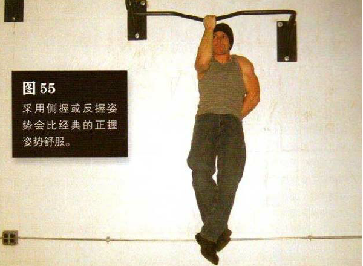
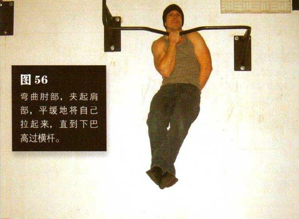

单手抓住高过头顶的横杆，要选择对你来说最容易发力的抓握姿势——有人是正握，有人是侧握或反握，但对大多数人来说，在吊环上做该动作可能最容易。另一只手可随意放置，舒服即可。我的大多数学生喜欢将手臂悬于空中，我个人更喜欢像做单臂俯卧撑那样将手置于身后。哪种姿势都可以，只要不妨碍你做动作就好。将要锻炼的那只手臂（可以通过跳、蹬腿或借助一把椅子等方式）置于半弯曲状态，肘部弯曲成直角，即上臂与地面平行。双脚离地，脚踩交叠在一起并置于身后。发力的那侧肩部应该收紧，同时全身都要绷紧。这是该动作的起始姿势（图55）。弯曲肘部，夹起肩部，平缓地将自己拉起来，直到下巴高过横杆。
暂停一下，然后慢慢放低身体，回到起始姿势。在起始姿势暂停，再重复练习。
身体降得越低，引体向上就越难做。如果你还不能很好地掌握单臂半引体向上，那还是先集中练习该动作的靠上阶段，即身体接近横杆时的幅度。久而久之，一点点地增加动作幅度，直到可以标准地做这个动作。
初级标准：1 组，4 次
中级标准：2 组，各 8 次
高级标准：2 组，各 11 次